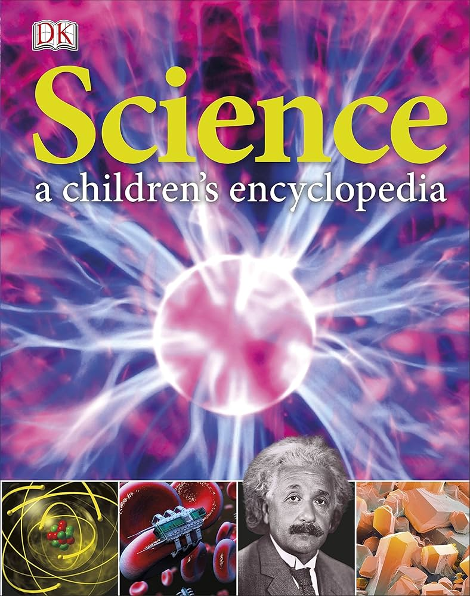

.png)

Rp. 45.000
Ensiklopedia sains yang menyajikan informasi IPA secara komprehensif dan mudah dipahami untuk pelajar hingga pembaca umum. Isi buku ini biasanya mencakup berbagai topik sains seperti fisika, kimia, biologi, bumi, dan teknologi dengan penjelasan istilah‑istilah penting disertai gambar ilustratif. Cocok dipakai sebagai referensi belajar, tugas sekolah, dan bacaan pengetahuan umum.

Rp. 50.000
Buku anak Islami dirancang untuk mengenalkan nilai-nilai agama dan akhlak sejak dini melalui cerita, aktivitas, dan ilustrasi yang menarik. Buku ini biasanya memuat: Kisah Nabi dan tokoh Islami yang mengajarkan moral dan kebaikan Nilai ibadah sehari-hari seperti shalat, doa, sedekah, dan perilaku baik Aktivitas edukatif seperti mewarnai, teka-teki, atau permainan yang membuat belajar Islam menyenangkan Bahasa sederhana dan ilustrasi penuh warna agar mudah dipahami anak Cocok untuk pembelajaran di rumah, sekolah, atau sebagai bacaan mandiri untuk menanamkan nilai agama dan karakter positif Secara singkat, buku anak Islami membantu anak belajar agama, akhlak, dan kebaikan dengan cara yang menyenangkan dan interaktif.
Rp. 60.000
Buku ini menghadirkan kumpulan kisah, pengalaman, dan pandangan yang menginspirasi anak muda untuk berani bermimpi, bertindak, dan berkembang. Dengan bahasa yang ringan namun penuh makna, buku ini mengajak pembaca untuk menemukan potensi diri, menghadapi tantangan, dan mengambil keputusan yang bijak dalam kehidupan sehari-hari Selain itu, buku ini juga menekankan pentingnya nilai-nilai positif seperti ketekunan, kreativitas, keberanian, dan empati. Setiap bab dirancang agar pembaca tidak hanya termotivasi, tetapi juga memperoleh panduan praktis untuk mengubah ide dan impian menjadi aksi nyata, menjadikan buku ini teman yang tepat untuk perjalanan pertumbuhan diri anak muda.